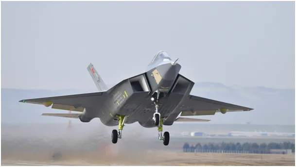
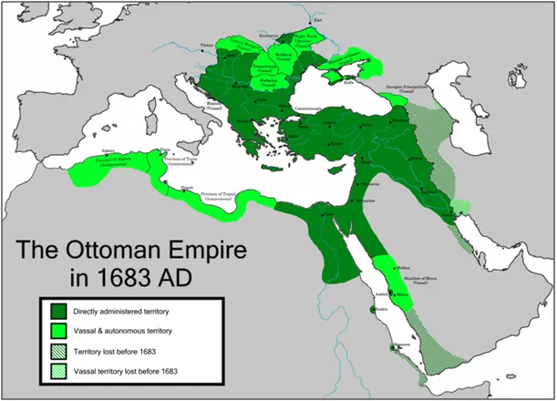
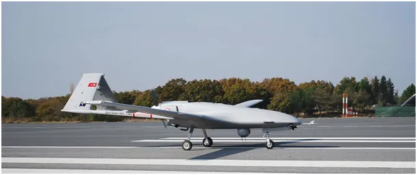
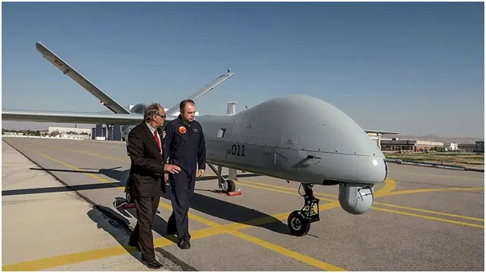
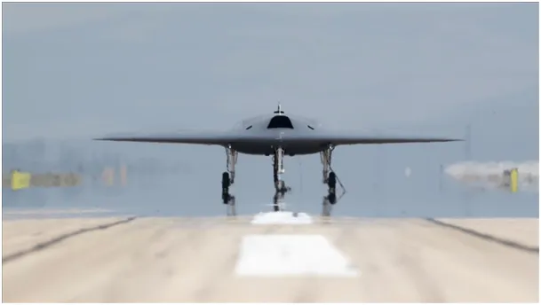
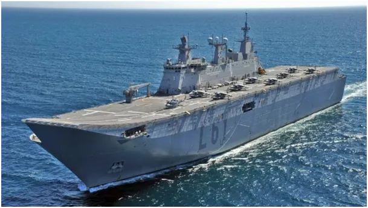
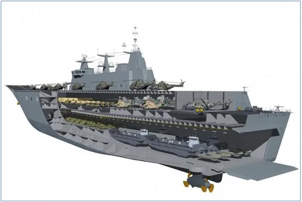

Turecki Cesarz wraca na nieboskłon.
W czasie, gdy w stoczni tureckiej powstaje już drugi lotniskowiec, Turcy oblatali w tym tygodniu swój pierwszy samolot V generacji nazwany Kaan, czyli Cesarz. Ich sen o odzyskaniu Imperium Osmańskiego nikt na świecie nie śmie nazwać "mrzonką".

Turcja od początku była członkiem międzynarodowego konsorcjum produkującego F-35 najnowsze cacko NATO, ciężki myśliwiecc V generacji pionowego startu. Pod pretekstem "niepotrzebnego zakupu" z Rosji defensywnych rakiet przechwytujących S-300 USA zablokowały przekazanie Turcji ponad 100 maszyn tego typu.





TCG Anadolu Lotniskowiec z pełnym wyposażeniem desantowym.
W rzeczywistości ten ruch uczynił z Izraela jedyny kraj w regionie posiadający te nowoczesne myśliwce. W trakcie negocjacji okazało się, że Turcja jest jedynym na świecie krajem zdolnym do produkcji kadłuba F35 i zapewne mogłaby ostatecznie postawić na swoim i dostać maszyny, ale Turcy całkowicie zmienili strategię dla swej armii.
Na miejsce drogich F-35, maszyn krótkiego startu, przeznaczonych dla swych lotniskowców stworzyli całą serię dronów od małych, po maszyny ciężkie oraz równocześnie rozpoczęli prace nad własnym myśliwcem V generacji. Zaledwie po kilku latach oblatali właśnie tę maszynę, co warto obejrzeć na filmie.
Paweł Klimczewski